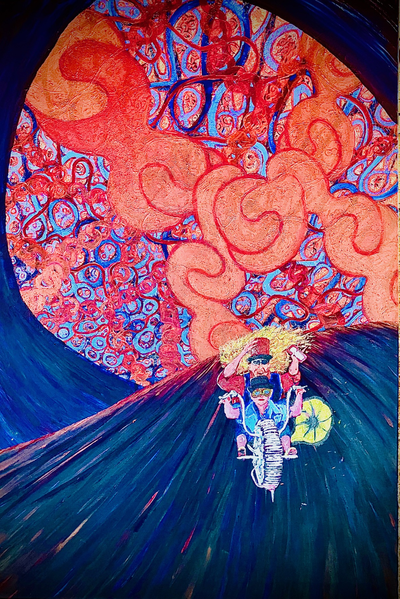

James Dandridge
James Dandridge lives off-grid in a shed in the rural south-west of England, where he writes surrounded by nature and the occasional philosophical paradox. He suspects his shed may be part of the reality Uncle Jimmy describes — though he has, so far, resisted wearing hats lined with tinfoil.


A cosmic conversation, a scientific provocation
Uncle Jimmy's Unified Universal Theory of Everything is a surreal philosophical novel that blends narrative storytelling with bold scientific speculation. In a timeless English cottage, Young Dandridge sits across from the enigmatic Uncle Jimmy — a philosopher in a velvet waistcoat whose mind spans the cosmos. What begins as a fireside conversation unfolds into a sweeping exploration of determinism, quantum mechanics, and the hidden architecture of reality itself.
Through a Socratic dialogue that bridges science and metaphysics, Uncle Jimmy introduces the concept of the Eternal Deterministic Fractal Universe — a model in which every event, from the fall of an atom to the turn of a thought, is part of a vast, recursive pattern. As the discussion deepens, randomness dissolves into structure, and free will flickers under the weight of quantum uncertainty. The result is a narrative that fuses storytelling with theoretical physics, philosophy, and humour, inviting readers to question whether the universe truly knows what happens next.
The book progresses through structured conceptual stages. Uncle Jimmy introduces Markov chains as the mathematical basis for dependency, arguing that even seemingly random events converge on predictable patterns. From there, he confronts the major scientific obstacles to determinism — quantum uncertainty, Bell's Theorem, and the Copenhagen Interpretation — countering each with alternative frameworks including hidden variables, Bohmian mechanics, superdeterminism, and the Many Worlds interpretation. These discussions are interwoven with character-driven humour, literary references, and surreal imagery that deepen the book's tone and thematic resonance.
As the dialogue intensifies, Uncle Jimmy expands the theory into cosmology, proposing a cyclic universe in which Big Bangs and Big Crunches form an eternal loop. This model supports the idea that information is never lost, consciousness is an emergent node of universal computation, and free will is a subjective illusion produced by biological processing. Young Dandridge's growing understanding mirrors the reader's journey, grounding complex ideas in accessible conversation.
In the epilogue, Dandridge turns from wonder to rigour, confronting the question that defines all scientific inquiry: Can it be falsified? The narrative closes not with certainty, but with challenge — inviting readers to test, question, and engage with the theory itself. In doing so, the book bridges the divide between storytelling and science, imagination and verification.
A bold synthesis of speculative physics, philosophy, and literary invention, Uncle Jimmy's Unified Universal Theory of Everything is both a cosmic conversation and a scientific provocation — a work that asks not only what if the universe already knows what happens next, but also how we might prove it wrong. It sits at the intersection of literary fiction, philosophical inquiry, and popular science, presenting a unified model of reality through an intimate, surreal, and memorable conversation.
For readers of Douglas Adams, Carlo Rovelli, David Bohm, and Mark Z. Danielewski — those who enjoy narrative experimentation, metaphysical speculation, and stories that challenge conventional boundaries between fiction and theory.
A writer for reflective readers
James writes fiction that treats physics, philosophy, and humour as natural companions rather than separate disciplines. His debut novel, Uncle Jimmy's Unified Universal Theory of Everything, grew out of long fireside conversations — real and imagined — about determinism, quantum mechanics, and what it might mean for the universe to already know what happens next.
The book is currently a pre-publication draft, being shared with a small number of early readers whose interests overlap with its themes: cosmology, consciousness, and the strange places where science and story meet.
Whether you're here out of curiosity about the ideas, or hoping to follow the book toward publication, thank you for stopping by the reading room.
Want to say hello?
Use the contact form on the home page to send James a message directly — readers, reviewers, and literary agents are all very welcome.
Send a message